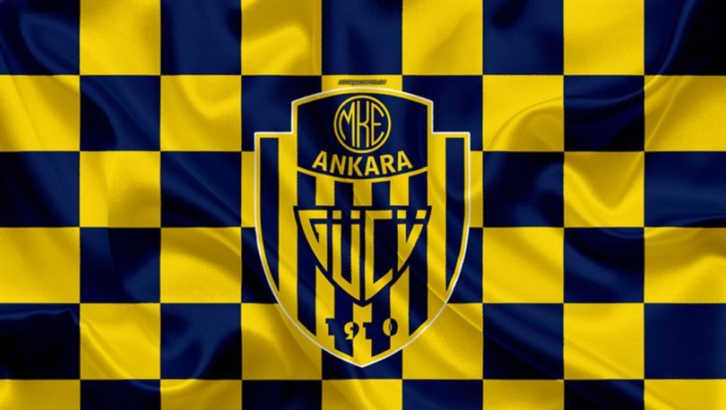

ANKARAGÜCÜ

MKE Ankaragücü, Ankara'nın Süper Lig'de mücadele eden futbol takımı. 1910 yılında kurulan MKE Ankaragücü'nün, 1911'de kurulan tam anlamıyla 1922'de faaliyete geçen futbol şubesidir. Maçlarını 22.000 kapasiteli Eryaman Stadyumu'nda oynamaktadır. Ankaragücü'nün bugüne dek kazandığı 1 Türkiye Futbol Şampiyonası, 2 Türkiye Kupası ve 1 Türkiye Süper Kupası şampiyonluğu bulunmaktadır.
Teknik direktör: Tolunay Kafkas

Takım Kadrosu
Gökhan Akkan
Kaan Çinkaya
Doğukan Kaya
Bahadır Han Güngördü
Uroš Radaković
Nihad Mujakić
Yusuf Eren Göktaş
Matěj Hanousek
Arda Kızıldağ
Stelios Kitsiou
Arda Ünyay
Hasan Ali Kaldırım